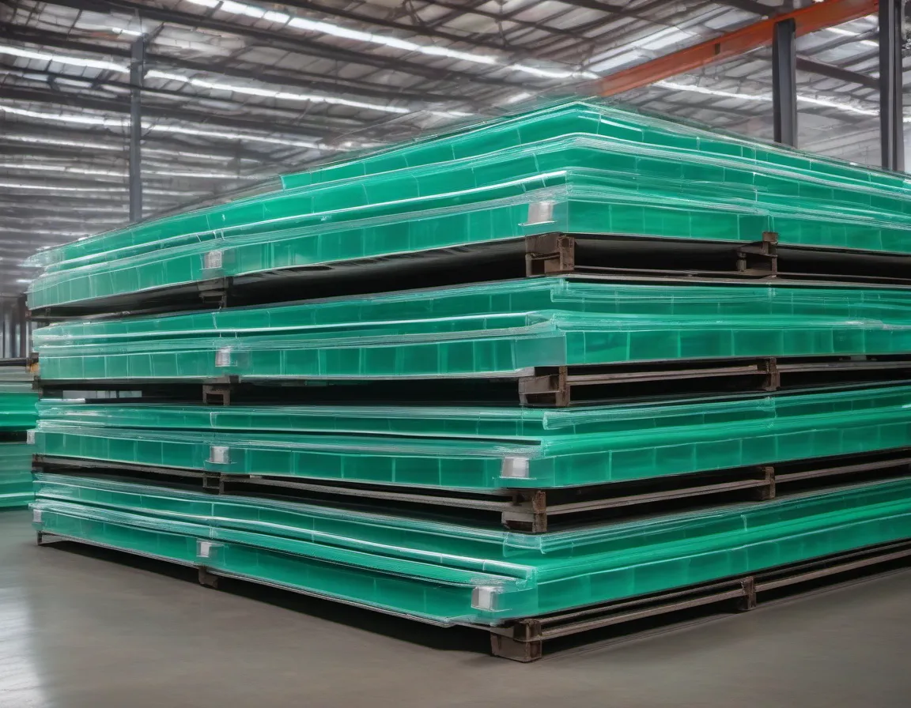
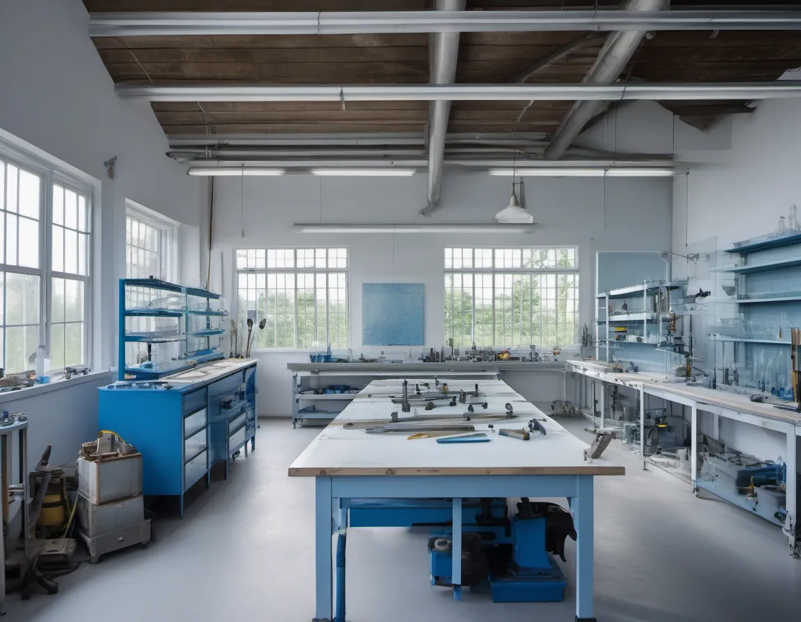

01
Venta al por mayor
Suministro continuo para cristaleros, carpinterías y constructoras.
Venta al por mayor, cortes al milímetro y grosores de 3 a 19 mm. Te asesoramos sin compromiso.
Venta al por mayor para profesionales y piezas a medida para cualquier proyecto.

Suministro continuo para cristaleros, carpinterías y constructoras.
Cortamos y pulimos cada pieza a la medida exacta que necesitas.
De 3 a 19 mm: templado, laminado, mate y de seguridad.
Ofrecer cristal de calidad, cortado con precisión y entregado a tiempo, con un trato cercano y honesto.
